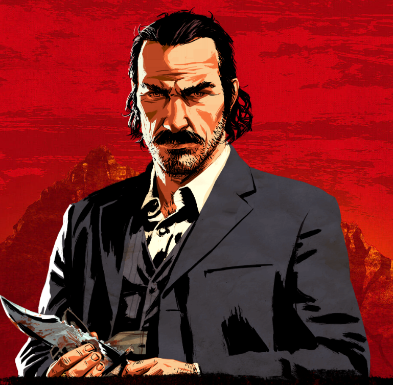
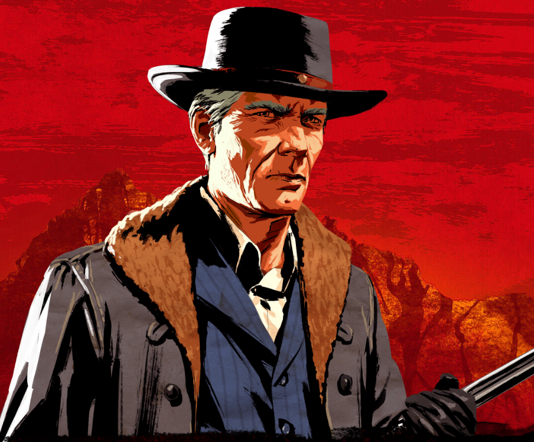
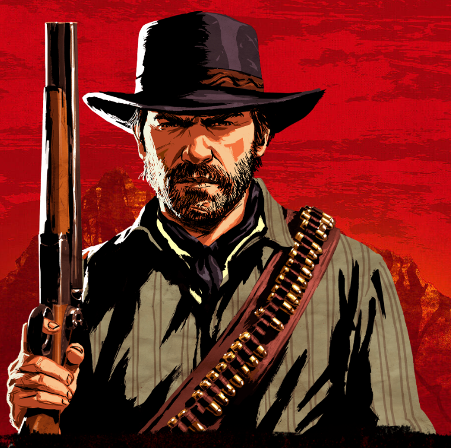
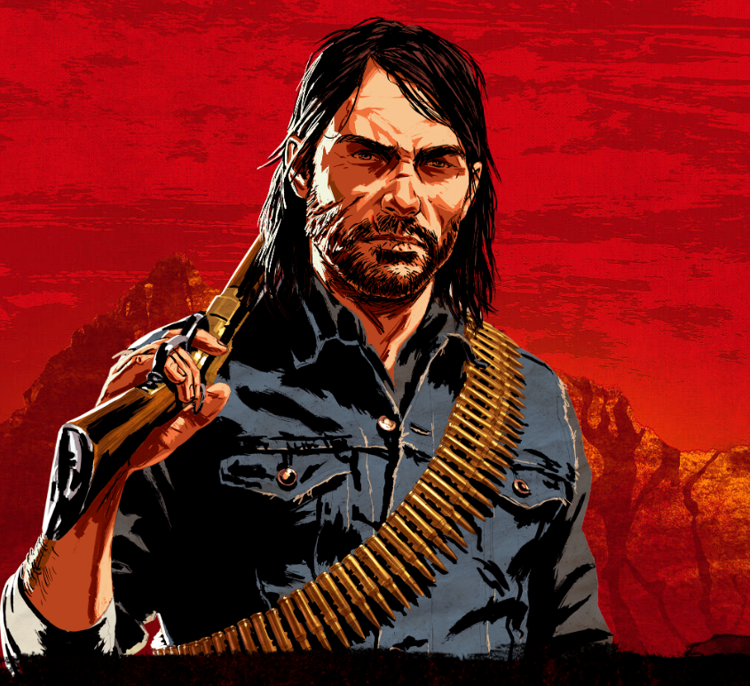
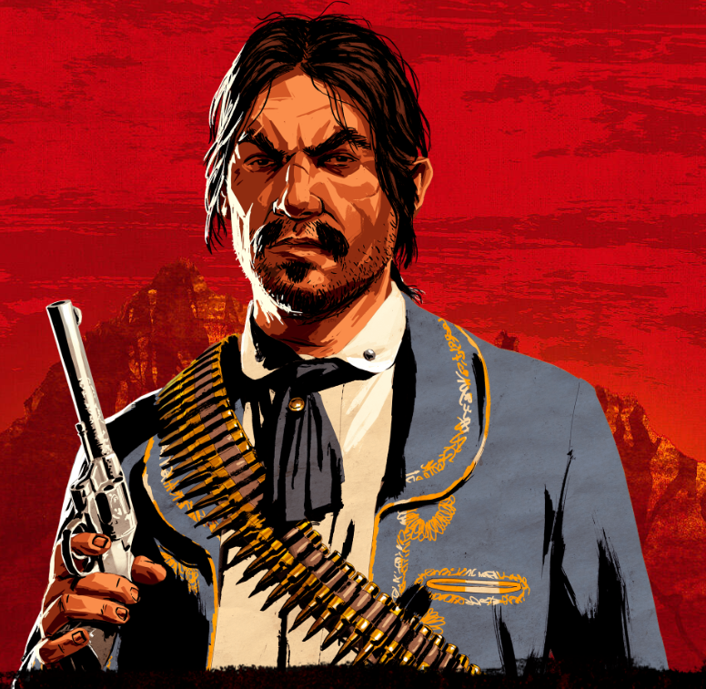
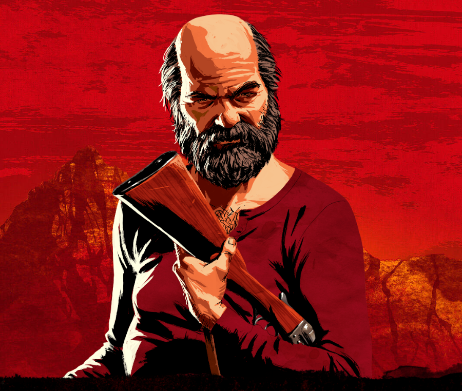

-
Dutch Van Der Linde
Descrição
O líder de uma gangue considerável de bandidos e desajustados. Idealista, anárquico, carismático, culto, bem vivido, mas possivelmente começando a desmoronar sob as pressões do mundo moderno invasor.
-
Hosea Matthews
Descrição
Um mestre vigarista, cavalheiro e ladrão, Hosea é o amigo mais próximo e braço direito de Dutch há mais de vinte anos. Inteligente e perspicaz, ele pode entrar ou sair de praticamente qualquer coisa.
-
Arthur Morgan
Descrição
O executor mais confiável e capaz de Dutch desde que era menino, a vida fora da lei é tudo o que Arthur já conheceu. Afiado, calmo e implacável, mas com seu próprio senso de honra. Um homem que faz o trabalho.
-
John Marston
Descrição
Outrora um garoto de rua órfão, colocado sob a proteção de Dutch aos doze anos, John sempre teve que viver de acordo com sua inteligência. Astutos, destemidos e obstinados, ele e Arthur são os protegidos mais orgulhosos de Dutch.
-
Javier Escuela
Descrição
Um notório caçador de recompensas e revolucionário mexicano. Javier teve imediatamente uma forte ligação com os ideais de Dutch. Muito comprometido, apaixonado e leal.
-
Uncle
Descrição
Um cara parasita e divertido, o Tio está sempre por perto quando o uísque está aberto e nunca por perto quando há algum trabalho a ser feito. Se ele não fosse tão divertido, Dutch o teria dispensado anos atrás.